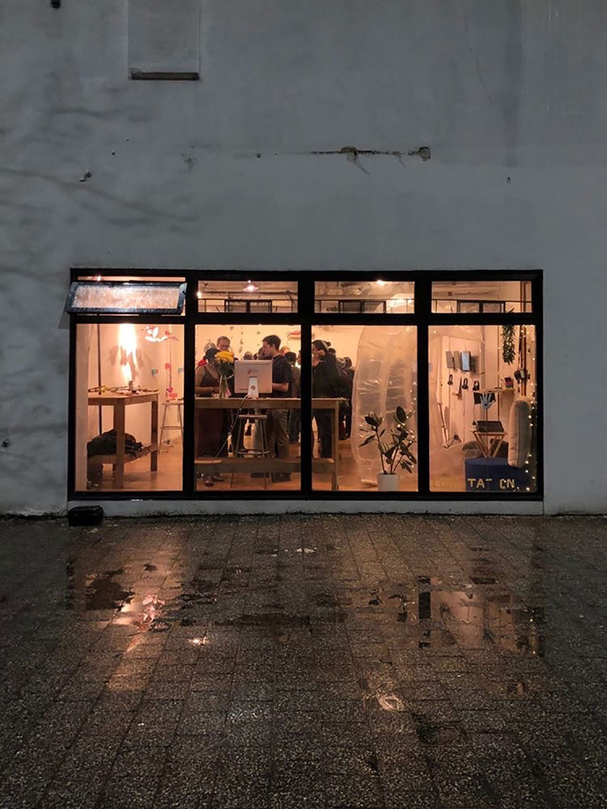

School
for
Poetic
Computation
loading...
Dear visitor,
Welcome to the School for Poetic Computation. We are softly launching this website as a work in progress. Over
the next year, we will be migrating content from our old website and
re-building our archive(1) of programs, projects, publications and
community members. Our URL change from sfpc.io to sfpc.study is an embrace of the vision for our school to be
"a place where we explore computation, but computation isn't the
point."(2)
Our old website will live at legacy.sfpc.study...
Keep reading
 We'd like to bring your attention to this website's two modes. By default, you are entered into cathode-ray
mode, inspired by the displays of early CRT computers. You can switch into liquid crystal (LCD) mode at any
time by selecting your choice at the bottom left. The default cathode-ray or dark mode is a refusal of
"the positioning of white as neutral within interfaces,"(3)
a positioning which this website turns in on itself.
We'd like to bring your attention to this website's two modes. By default, you are entered into cathode-ray
mode, inspired by the displays of early CRT computers. You can switch into liquid crystal (LCD) mode at any
time by selecting your choice at the bottom left. The default cathode-ray or dark mode is a refusal of
"the positioning of white as neutral within interfaces,"(3)
a positioning which this website turns in on itself.

If you've ever visited SFPC's former space,
at the Westbeth Artists Community located in New York City's West Village, you'll remember four large
windows in front of the courtyard. This is where you might have peeked into before an event, or stood in
front of to take a group picture at the end of your session.
Now that the school is operating online, the
four column grid of this website is inspired by those four prominent
floor to ceiling windows to memorialize our poetics of relation through a similar black frame which we now
peek into through digital screens.
 Something tender about those windows is how participants and visitors would graffiti "school for poetic
computation" on them over the years, refiguring the identity of the school through post-its, hand lettering
and hand drawn sketches.
Poetic computation is something everyone can participate in,(4) and
in a similar vein, the header of this website cycles through various definitions of poetic computation as
contributed by people in our community.
Something tender about those windows is how participants and visitors would graffiti "school for poetic
computation" on them over the years, refiguring the identity of the school through post-its, hand lettering
and hand drawn sketches.
Poetic computation is something everyone can participate in,(4) and
in a similar vein, the header of this website cycles through various definitions of poetic computation as
contributed by people in our community.

"Poetic computation begins with the interfacing between two or more beings" is a definition that resonates.
This website holds within itself that particular yearning for connection, as we continue into our third
round of online classes this spring.
Visit us online from 9am to 9pm from Monday to Friday! While we rest, the website will be closed, except
when applications are open.
In collective study,
SFPC Stewards
This letter was published on February 9th, 2022.
(1) re-building our archive:
This website was designed by Zainab Aliyu and built with Todd Anderson. It is fully keyboard accessibile
for non-mouse users, and is typeset in Hershey Naoille and Courier.
(2) a place where we explore computation, but computation
isn't the point: A quote from a letter SFPC Stewards authored in April 2021, which
was originally posted in SFPC's Slack under the username "sfpcstudy."
(3) the positioning of white as neutral within
interfaces: A framing from Black Gooey Universe by American Artist.
(4) poetic computation is something everyone can
participate in: Poetic computation is an ever blooming definition. We invite you in to study in
pursuit of both defining and resisting reductive definitions of poetic computation. You can submit your
own definition here.
The School for Poetic Computation is an experimental school in New York City supporting interdisciplinary
study in art, code, hardware and critical theory. It's a place for learning and unlearning.
Learn more about us here.